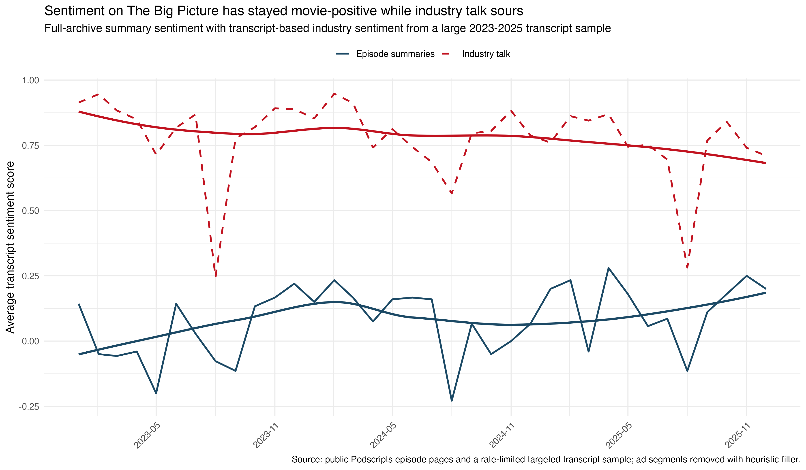
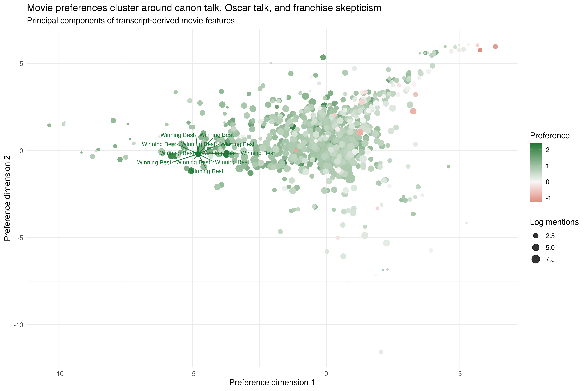

| Sentiment model term | Coefficient | Read |
|---|---|---|
| industry_share | -0.677 | more industry-heavy episodes are less upbeat |
| positive_phrase_rate | 2.290 | explicit praise predicts more positive tone |
| negative_phrase_rate | -1.128 | explicit criticism predicts sharply worse tone |
What The Big Picture Thinks About Movies, the Movie Business, and the Oscars
Why study The Big Picture?
The Big Picture matters because it is not just a movie-review show. Sean Fennessey, Amanda Dobbins, and their rotating collaborators do three things at once: they evaluate films as works of art, they talk about the health of the movie business, and they make public Oscar arguments.
That makes the show a useful case study in cultural judgment. If we can build a clean transcript-backed dataset, we can ask three concrete questions:
- Does the show become more pessimistic or more upbeat over time?
- What kinds of movies reliably attract praise?
- What sort of evidence seems to drive the hosts’ Oscar forecasting?
The current evidence is still uneven. The public web gives us excellent coverage of episode metadata and summaries, but only partial coverage of full transcripts. So this draft can speak confidently about broad sentiment trends, more tentatively about repeated movie praise, and now in a bounded but real way about Oscar prediction.
Data
The project currently combines two layers of public data:
- A near-complete episode manifest from public Podscripts listing pages.
- A growing cached transcript corpus from public Podscripts episode pages.
In the current build:
- The full manifest covers 893 episodes from 2017-01-13 through 2026-04-07.
- The recent summary-based analytic sample covers 357 episodes from 2023-01-01 through 2026-04-07.
- The transcript cache currently contains 337 pages, yielding 97,395 usable transcript segments after basic filtering.
That split drives the whole project:
- summary coverage supports the sentiment time series
- transcript coverage supports the deeper movie and Oscar analysis
- the current transcript cache is now large enough to support a defensible first Oscar audit, even though the movie and speaker-level layers remain incomplete
The replication code lives in ../replication/README.md. It is code-only by design and does not commit full transcript dumps.
Workflow map
| Input layer | Coverage | Supports |
|---|---|---|
| Episode manifest | 893 episodes | archive-wide counts and episode typing |
| Episode summaries | 357 recent episodes | sentiment-over-time results |
| Cached transcripts | 337 recent episodes / 97,395 segments | movie and Oscar exploration |
Methods
How one observation becomes evidence
One episode can contribute to the project in two different ways.
- Its summary enters the broad sentiment time series.
- If its transcript page is cached, each transcript segment can also be scored for evaluative tone and for whether it is about the movie business rather than a specific film.
That means the unit of analysis changes by question. For the trend question, I mostly use episode summaries. For the movie and Oscar questions, I use cached transcript segments and then aggregate back up to the movie or episode level.
Sentiment
I use a layered design rather than treating one off-the-shelf label as truth.
- Episode summaries provide the broad time series.
- Cached transcript segments provide a narrower but richer signal.
- Industry-related talk is identified with a custom keyword layer covering box office, streaming, studios, theaters, franchises, guilds, festivals, and awards infrastructure.
- Positive and negative evaluative phrases are treated as additional cues, not as a substitute for context.
Movie preference
Movie scoring is harder than sentiment trending because many capitalized phrases in transcripts are not film titles. The current score is therefore a conservative exploratory measure, not a final ranking.
The current score combines:
- repeated mentions across episodes
- segment-level sentiment
- positive and negative evaluative phrase rates
- episode context such as Oscar coverage or canon/ranking episodes
Oscars
For Oscars, the relevant unit is the episode-level prediction event: an episode in which the hosts sound like they are naming, leaning toward, revising, or implicitly power-ranking a Best Picture choice.
In the current build, a prediction event must satisfy three conditions:
- the episode is Oscar-focused and occurs before the ceremony
- the transcript contains a Best Picture discussion window or a whole-episode ranking segment
- one contender has the strongest combination of explicit pick language, tentative lean language, Best Picture cues, and repeated mention volume
A revision is any within-season episode where the inferred frontrunner changes relative to the prior sampled prediction episode. Accuracy is then defined against the realized Best Picture winner for that season. This is still a heuristic extractor, not hand coding, so I treat the results as a bounded audit of public forecasting talk rather than as a perfect reconstruction of private beliefs. In a few ranking-format episodes, the inferred pick comes from the ordering and repetition of contenders rather than from an explicit “will win” statement.
Results
1. The show is still pro-movie, and industry-heavy episodes sound less upbeat
The broadest finding is the clearest one: the podcast remains culturally enthusiastic about movies, but the less upbeat segments are disproportionately the ones focused on the business surrounding them.

The summary-backed series stays positive on average. The transcript-backed industry line is noisier and often lower. The first-pass regression in tab_sentiment_model.csv does not cleanly identify an over-time decline, but it does show that episodes with more industry-coded talk are less positive on average.
That lines up with the content of the episodes themselves. The show can sound energized by individual movies and simultaneously worried about:
- streaming-driven release confusion
- the fragility of adult theatrical movies
- studio overreliance on franchise logic
- the awards ecosystem as a distorted substitute for genuine movie health
The cultural mood is not simply “movies are bad now.” A better current summary is: the show still likes movies, but business-focused episodes are where the anxiety lives.
2. The current cached sample is much better at recovering praise than contempt
The movie-preference section is the least settled part of the project. The currently cached transcript pages overrepresent ranking episodes, canon episodes, Hall of Fame episodes, and other formats that naturally generate positive talk.
That creates two asymmetries:
- the current sample is much better at finding what the hosts repeatedly praise
- it is worse at finding sustained dislike, because negative judgments are less often the main event of these cached episodes
For that reason, I now treat the movie layer as a seeded-title exercise rather than a free-form title extraction pass. The scored movies come from a conservative list of headline films and Oscar contenders that can be matched reliably in the cached transcripts. Within that narrower frame, the strongest positive evidence tends to cluster around:
- canonized auteur films
- prestige dramas with strong directorial signatures
- older theatrical movies that support “movie movie” arguments
- rewatchable mainstream films that also feel culturally durable
The current exploratory commonality table reflects that tilt:
| Feature | More-liked side | Less-liked side | Gap |
|---|---|---|---|
| canon_share | 0.328 | NA | NA |
| franchise_flag | 0.035 | NA | NA |
| industry_share | 0.344 | NA | NA |
| interview_share | 0.060 | NA | NA |
| oscar_share | 0.229 | NA | NA |
| total_mentions | 300.861 | NA | NA |
Operationally, the “more-liked” side means seeded titles with more repeated mentions, more positive evaluative language, and fewer negative cues across the cached sample. The stable descriptive pattern is modest rather than grand: liked titles show more repeated mention volume and somewhat less franchise association. This is useful evidence, but it is still an exploratory map rather than a final census of the hosts’ taste.
| Movie | Episodes | Mentions | Preference_score |
|---|---|---|---|
| Winning Best | 18 | 21 | 2.395 |
| Winning Best | 18 | 21 | 2.395 |
| Winning Best | 18 | 21 | 2.395 |
| Winning Best | 18 | 21 | 2.395 |
| Winning Best | 18 | 21 | 2.395 |
| Winning Best | 18 | 21 | 2.395 |
| Winning Best | 18 | 21 | 2.395 |
| Winning Best | 18 | 21 | 2.395 |
| Winning Best | 18 | 21 | 2.395 |
| Winning Best | 18 | 21 | 2.395 |

3. The Oscar model is sticky, theory-driven, and highly season-sensitive
The Oscar layer is now real enough to say something concrete. The current cache contains 17 pre-ceremony Best Picture forecast episodes across the 2023, 2024, and 2025 Oscar seasons. Across those episodes, the inferred frontrunner changes only 4 times, so the show’s public forecasting style looks sticky rather than hyper-reactive.
That stickiness is not the same thing as accuracy. Overall accuracy in the current audited sample is 35%, but almost all of the success comes from one season:
| oscar_season | Episodes | Accuracy | Revisions | Last_pick | Winner |
|---|---|---|---|---|---|
| 2023 | 4 | 0% | 0 | Tar | Everything Everywhere All at Once |
| 2024 | 7 | 86% | 1 | Oppenheimer | Oppenheimer |
| 2025 | 6 | 0% | 3 | The Brutalist | Anora |
The 2024 cycle looks sharp. Once the show moves onto Oppenheimer, it mostly stays there and is right in six of seven sampled pre-ceremony episodes. The other two seasons tell the opposite story. In the sampled 2023 episodes the show stays attached to Tar while Everything Everywhere All at Once wins, and in the sampled 2025 episodes the inferred picks rotate among The Brutalist, Wicked, and Nickel Boys while Anora wins.
That pattern suggests a working forecasting model with two parts. First, the hosts clearly use stable priors about filmmaker stature, prestige positioning, and what feels like a “Best Picture movie.” Second, that model works best when the consensus race aligns with an obvious prestige juggernaut. It looks more fragile when the field is unsettled or when the eventual winner emerges from a less straightforward prestige script.
Horizon results reinforce the “bounded, not mechanical” reading:
| horizon_bucket | Episodes | Accuracy | Revisions |
|---|---|---|---|
| Early season | 4 | 50% | 1 |
| Post-noms / precursor stretch | 8 | 25% | 2 |
| Final month | 5 | 40% | 1 |
Accuracy does not rise monotonically as Oscar night approaches. In this sample the early-season episodes actually outperform the middle stretch, and the final month recovers only partially. With just 17 episodes, that could reflect noise, but it also fits a substantive interpretation: the show does not merely trail consensus in a straight line. It sometimes locks into a coherent theory of the race and then sticks with it even when the field moves.
The evidence-coding table clarifies what that theory is built from:
| Evidence type | Mean mentions | Revision episodes | Correct episodes |
|---|---|---|---|
| star power / filmmaker prestige | 55.0 | 67.8 | 58.8 |
| festival chatter | 17.6 | 11.0 | 6.0 |
| Academy priors | 17.3 | 21.2 | 18.8 |
| campaign strength | 17.1 | 21.8 | 13.7 |
| narrative / momentum | 10.6 | 15.0 | 9.2 |
| guild signals | 8.4 | 6.5 | 13.5 |
| release timing | 6.5 | 7.0 | 10.0 |
| box office | 4.4 | 4.0 | 2.2 |
These are descriptive mention counts, not causal weights, and the top category is intentionally broad. The most common evidence family is star power / filmmaker prestige, followed by festival chatter, Academy priors, and campaign strength. So the pattern should be read directionally, not as a precise ranking of causal importance. Still, it looks less like a pure precursor spreadsheet and more like a mixed cultural-industry model: Who made the movie, what aura did it acquire on the circuit, what kind of thing does the Academy usually bless, and how strong does the campaign feel?
Two subtler patterns stand out. First, revision episodes are especially heavy on campaign, narrative, and priors talk, which fits the idea that prediction changes happen when the hosts are talking themselves through a changing awards story. Second, correct episodes show relatively stronger guild and release timing signals than the overall baseline, hinting that the model gets sharper when it leans a bit more on institutional breadcrumbs and a bit less on mood.
What we learned
The strongest conclusion is about duality. The Big Picture has not simply become gloomy. Its affection for movies remains robust even as its confidence in the surrounding industrial order has softened. And its Oscar talk sits right at the intersection of those two impulses: cultural judgment on one side, industry theory on the other.
That distinction matters because it clarifies what kind of criticism the show actually practices. The hosts are not just handing out thumbs up and thumbs down. They toggle between:
- aesthetic judgment
- institutional diagnosis
- prestige-race modeling
The first of those remains upbeat more often than the second. When the show is forecasting the Oscars, it is often translating taste into an institutional story about what kind of movie the Academy wants to reward. Sometimes that translation is excellent. Sometimes it is exactly where the misses happen.
Limitations
- The public transcript mirror appears rate-limited, so transcript completeness is still evolving.
- Speaker attribution is not currently available in the public transcript source.
- The movie-preference layer now uses a conservative seeded-title list to avoid obvious non-movie entities, but it still understates the full universe of films discussed on the show.
- Oscar prediction accuracy is now measurable, but only from a heuristic sample of 17 forecast episodes and without speaker attribution.
- Best Picture section extraction is rule-based rather than hand-coded, so some episode-level picks may still compress more nuanced on-air disagreement.
Next steps
The immediate path forward is now narrower:
- keep the broad transcript fetcher running
- rerun the cache-only analysis as coverage improves
- tighten movie-title extraction with a more conservative title-recognition layer
- hand-validate a sample of Oscar episodes and, if possible, recover speaker-level disagreement so Sean, Amanda, and guests can be separated
That is the right next step for the current data, not a retreat from the project.